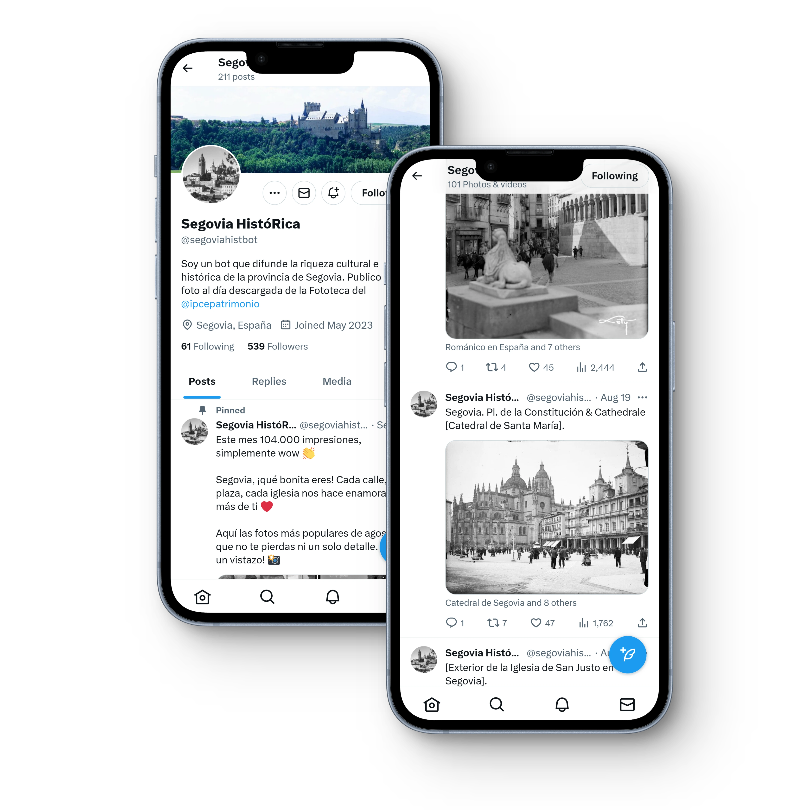

¿Qué es Segovia HistóRica?
Un proyecto de difusión del patrimonio cultural de la provincia de Segovia que aúna HISTORIA, REDES SOCIALES y TECNOLOGÍA

Se trata de un procedimiento automático o bot, programado para publicar una foto al día de la provincia de Segovia en Twitter
Son descargadas del catálogo de la Fototeca del Instituto del Patrimonio Cultural de España